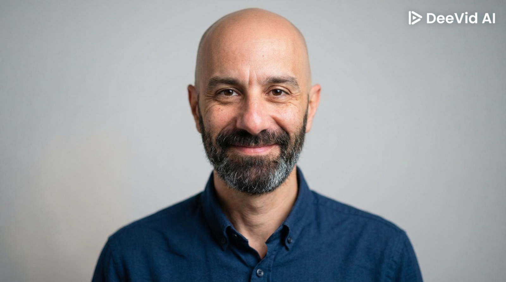

מי אני
שמי יוסי אלעזר. במשך 22 שנים עבדתי בעולם ההייטק – פיתוח תוכנה, בדיקות איכות וניהול מערכות בחברות טכנולוגיות מובילות מתחומים מגוונים.
לפני כארבע שנים בחרתי לעשות מעבר משמעותי – להביא את הידע הטכנולוגי שצברתי לעולם החינוך. כיום אני מורה מחנך בבית הספר הדמוקרטי שבילים בפרדס חנה.
השילוב בין ניסיון מקצועי עמוק בהייטק לבין עבודה יומיומית עם ילדים מאפשר לי ללמד תכנות בצורה נגישה, סבלנית ומותאמת לגיל, תוך יצירת חוויית למידה בטוחה, מקצועית ומהנה.
ByteLogicx נולדה מהצורך לגשר בין שני העולמות: לספק לבתי ספר ולמורים פתרונות טכנולוגיים שמבינים את המציאות הכיתתית, ולתת לילדים חוויית למידה שמכינה אותם לעולם דיגיטלי.
תחומי מומחיות
המסלול שלי
עולם ההייטק
22 שנות פיתוח תוכנה, בדיקות QA וניהול מערכות בחברות הייטק מובילות בישראל
מעבר לחינוך
החלטה לחבר בין עולם הטכנולוגיה לעולם החינוך – תחילת דרך בבית הספר הדמוקרטי שבילים
מורה מחנך בשבילים
מלמד תכנות, לוגיקה ומחשבה חישובית לילדים, עם דגש על חוויית למידה מהנה ומשמעותית
ByteLogicx
הקמת ByteLogicx – פלטפורמה שמחברת בין טכנולוגיה לחינוך: שירותים לבתי ספר, ייעוץ למורים וחוג לילדים